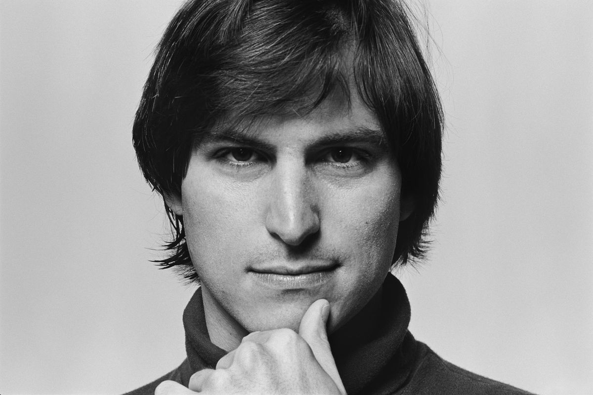

Steve Jobs (1955-2011) foi um empresário norte-americano, fundou a Apple. Criou o "Macintosh", o "iPod", o "iPhone" e o "iPad". A Apple revolucionou a indústria de computadores pessoais, os filmes de animação, o mundo da música e dos telefones celulares.
Linus Benedict Torvalds (Helsínquia, 28 de dezembro de 1969) é um engenheiro de software, nascido na Finlândia e naturalizado estado-unidense em 2010, criador e por muito tempo o desenvolvedor mais importante do núcleo Linux, sendo utilizado em importantes sistemas Linux, Android e Chrome OS. É também o criador do Git, sistema de controle de versão amplamente utilizado, e do aplicativo para planejamento e registro de mergulho, Subsurface.

William Henry "Bill" Gates III (Seattle, 28 de outubro de 1955) é um magnata, empresário, diretor executivo, investidor, filantropo e autor norte-americano, que ficou conhecido por fundar, junto com Paul Allen, a Microsoft, a maior e mais conhecida empresa de software do mundo em termos de valor de mercado.